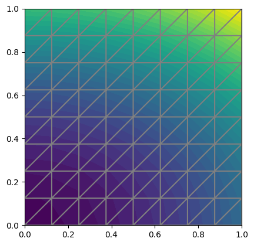

Chapter 2: Fundamentals¶
Here we take a brief peek at the most basic FEniCS capabilities by solving the Poisson equation, the “hello world” of PDEs.
2.1 - 2.3 Finite Element Variational Problems¶
Introduction to the finite element variational method!
The “hello world” of the finite element methods for PDEs is the Poisson equation, which consists of the following boundary value problem:
Here u is our unknown function, f = f(x) is a prescribed function, \(\nabla^2\) is the Laplace operator, \(\Omega\) is the spatial domain, and \(\partial \Omega\) is the boundary of \(\Omega\)
Solving such a boundary-value problem in fenics involves:
- Identify the computational domain, the PDE, its boundary conditions, and source terms (f).
- Reformulate the PDE as a finite element variational problem.
- Write a Python program which defines the computational domain, the variational problem, the boundary conditions, and source terms using the corresponding FEniCS abstractions.
- Call FEniCS to solve the boundary-value problem and, optionally, extend the program to compute derived quantities such as fluxes and averages, and visualize the results.
Variational Formulation¶
We’ll need a brief introduction to the variational method here. The basic recipe for turning a PDE into a variational problem is to multiply the PDE by a vunction v, integrate the resulting equation over the domain \(\Omega\), and perform integration by parts of terms with second-order derivatives. The function v which multiplies the PDE is called a test function.The unknown function u to be approximated is referred to as a trial function. The terms trial and test functions are used in FEniCS programs too. The trial and test functions belong to certain function spaces that specify the properties of the functions.
For an example, we do just that for the Poisson equation
What we’d like to do is decrease the order of the derivatives of u and v as much as possible, so of course we’ll be integrating by parts. To make the variational formulation work, we choose a function space such that the test function is required to vanish on the parts of the boundary where the solution u is known. This means that we get to drop the boundary terms, and we can pull off derivatives from u at the cost of a minus sign:
We can then define our original PDE as the variational problem: find \(v \in V\) such that
where the trial and test spaces \(V\) and \(\hat{V}\) are in the present problem defined as
Our finite element solver finds an approximate solution to this problem by replacing the infinite-dimentional function spaces by discrete trial and test spaces. Once we’re there, voila! FEniCS can take care of the rest.
Abstract variational formulation¶
It’s convenient to introduce some notation for variational problems: find \(u \in V\) such that
In our example of the Poisson equation, we have:
Here we say \(a(u, v)\) is a bilinear form and \(L(v)\) is a linear form. In each problem we want to solve, we’ll identify the terms with the unknown u and collect them in \(a(u, v)\), and similarly collect all terms with only known functions in \(L(v)\).
-
class
ch2.demo_poisson.PoissonDemo(n) Here we are trying to solve a problem we already know the answer to. Solutions that are low-order polynomials are great candidates to check the accuracy of our solution, as standard finite element function spaces of degree r will exactly reproduce polynomials of degree r. We manufacture some quadratic function in 2D as our exact solution, say
\[u_e(x, y) = 1 + x^2 + 2y^2\]By inserting this into the Poisson equation we find that it is a solution if
\[\begin{split}f(x, y) & = & -6 \\ u_D(x, y) & = & u_e(x, y) = 1 + x^2 + 2y^2\end{split}\]For simplicity, we’ll deal with the unit square as our domain
\[\Omega = [0,1] \times [0,1]\]The code in this module shows how to solve this example problem in FEniCS, and since we already know the answer, we also compute the L2 error of our solution. Since we expect our discrete space to exactly reproduce the solution, the error should be within machine precision.
We define our function space by first defining a mesh. We use
UnitSquareMeshto define a uniform finite element mesho over the unit square, which consists of cells (2D triangles) with straight sides. We then define the function space usingFunctionSpace. The second argument “P” determines the type of element. Here we use the standard Lagrange family of elements. There are other simplex element families supported and defined in the Periodic Table of the Finite Elements (https://www.femtable.org)Computing the Error:
Since we’ve chosen a problem we already know the solution to, we can compute the error to check the accuracy of the simulation. We do this by comparing the finite element solution
uwith the exact solution, which in this example happens to be the same as the expressionu_Dused to set the boundary conditions. We compute the error in two different ways. First, we compute the \(L^2\) norm of the error, defined by\[E = \sqrt{ \int_{\Omega} (u_D - u)^2 dx }\]Since the exact solution is quadratic and the finite element solution is piecewise linear, this error will be nonzero. To compute this error in FEniCS just use the
errornormfunction.Solution to the Poisson equation with a test quadratic \(u_e(x, y) = 1 + x^2 + y^2\) and 8x8 spatial grid spacing
2.4 Deflection of a Membrane¶
Problem Description¶
After kicking the tires with a test problem where we know the answer, we turn to a physically more relevant problem with solutions of a somewhat more exciting shape.
We want to compute the deflection \(D(x, y)\) of a two-dimensional circular membrane of radius \(R\), subject to a load \(p\) over the membrane. The appropriate PDE model is
Here \(T\) is the tension in the membrane (constant), \(p\) is the external pressure load. The boundary of the membrane has no deflection, implying \(D=0\) as a boundary condition. We’ll model a localized load as a Gaussian:
The parameter \(A\) is the amplitude of the pressure, \((x_0, y_0)\) the localization of the maximum point of the load, and \(\sigma\) the “width” of the load. We will take the center of the pressure to \((0, R_0)\) for some \(0 < R_0 < R\)
Scaling the Equation¶
We have a lot of physics parameters in the problem, and as with any such problem we can improve our numerical precision by grouping them by means of scaling. We introduce dimensionless coordinates \(\bar{x} = x / R, \, \bar{y} = y / R\) and a dimensionless deflection \(w = D / D_c\) where \(D_C\) is a characteristic size of the deflection. Introducing \(\bar{R_0} = R_0 / R\) we obtain
where
With the appropriate scaling, \(w\) and its derivatives are of size unity, so the LHS of the scaled PDE is about unity in size, while the right hand side has \(\alpha\) as its characteristic size. This suggests choosing \(\alpha\) to be unity, or around unity. We shall in this particular case choose \(\alpha = 4\) (One can also find the analytical solution in scaled coordinates and show that the maximum deflection \(D(0, 0)\) is \(D_c\) if we choose \(\alpha = 4\) to determine \(D_c\)). With \(D_c = A R^2 / (8 \pi \sigma T)\) and dropping the bars for convenience we obtain the scaled problem
to be solved over the unit disc with \(w = 0\) on the boundary. Now there are only two parameters to vary: the dimensionless extent of the pressure \(\beta\) and the localization of the pressure peak \(R_0 \in [0, 1]\). As \(\beta \rightarrow 0\), the solution will approach the special case \(w = 1 - x^2 - y^2\)
Given a computed scaled solution \(w\) the physical deflection can be computed by
-
class
ch2.demo_poisson_2_4.PoissonDemo24(n, beta=8, R0=0.6) Solving this problem is very similar to the previous test problem, with just a few modifications.
Defining a unit disk mesh:
A mesh over the unit disk can be created by the
mshrtool in FEniCS. TheCircleshape frommshrtakes the center and radius of the circle as arguments. The second argument togenerate_meshspecifies the desired mesh resolution. The cell size will be (approximately) equal to the diameter of the domain divided by the resolution.Defining the load:
We use an
Expressionobject to represent the pressure function in our PDE. We set the physical parameters \(\beta\) and \(R_0\) by keyword arguments. The coordinates in Expression objects are always an arrayxwith componentsx[0], x[1], x[2]corresponding with \(x\), \(y\), and \(z\). Otherwise we are free to introduce names of parameters as long as these are given default values by keyword arguments. All the parameters initialized by keyword arguments can at any time have their values modified.p.beta = 12 p.R0 = 0.3
Defining the variational problem:
The variational problem and boundary conditions are the same as in our first Poisson problem, but we introduce
winstead ofuas primary unknown andpinstead offas right-hand side function to better align with our problem description.w = TrialFunction(V) v = TestFunction(V) a = dot(grad(w), grad(v)) * dx L = p * v * dx w = Function(V) solve(a == L, w, bc)